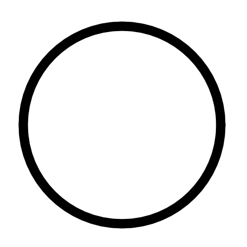

If you can learn anything, let it be archetypes as all things form or come from archetypes. They are like colored lenses of glass that light from the source shines through in order to paint the world with forms, colors, sounds, tastes, smells, feelings and more.
Everything "divides" into archetypes. This is what spiritual folk speak of when they say "frequency".
Archetypes are simple. Just think of all the major colors, or think of the major types of animals. Gold and lions relate. Why? because they are of the same archetype. The metal gold as well relates, mid day when the sun is strongest also relates. This is an archetype.
A pattern that repeats through all things. Physically they may even share common minerals. Spiritually a smell. Visually, a relating color.
Everything has an archetype or multiple of them. Technically all things exist with a little bit of each archetype in varying quantities. It's like a flag or nation that it falls under, a race or group that it belongs to. It's own tribe.
People organise themselves via archetypes, movies are organised in genres which are archetypal. Action is related to mars or violence and adrenaline.
One thing to note is that odd and even numbers are similar so the archetypes of 2 are similar to 4 and 3 is similar to 5.
For one, there is only one singular archetype. This is God, the whole world, completeness, a cycle, a circle, everything and all things and nothing.
One splits into two and takes on an opposing force. Yin and yang, positive and negative, black and white, hot and cold, wet and dry, up and down, left and right, physical and spiritual, man and woman, old and young, good and bad, tall and short, fat and thin, sun and moon, water and fire, etc.
Take some time to think over these archetypes and think of some yourself.
To understand three we keep our positive and negative archetypes but add a third neutral force. Some examples are earth water sky, salt oil liquid, lower body middle body upper body, black grey white, triangles.
We can use all of the past ones like fat and thin but now having a balanced body type or sun earth moon.
Four is similar to three but we split neutral into a positively orientated neutral and negatively orientated one while keeping the strong positive and strong negative.
Examples are the four elements of fire air water earth, front back left right, for limbs and squares.
Fire in the four elements is the highest and most active element. It represents heat, fire, intensity, light and power. Air is next and represents intellect, communication, speed, travel, force and speech.
Water is a movable physical element that represents receiving, healing, feeling, softness and nurturing. Earth is stability, grounding, material and possessions. It is the lowest.
Five is the pentagram or pentacle and relates to the five elements.
Seven is the hexagram and relates to the seven planets(Sol, Luna, Mars, Mercury, Venus, Jupiter, Saturn).
Sol is warmth, golden, glory, greatness, the king, luxury. Mars is hot, war and fighting, red, aggression, passion, smithing and cooking. Mercury is elusive, formless, work and jobs, language, science, math, silver.
Venus is beautiful, moist, pleasurable, sweet, green and leisurely. Jupiter is generous, growing, wise, blue, authoritative, moral and lawful.
Saturn is cold, black, restrictive, physical, hidden and heavy.
12 is the zodiac.
Aries is the first, morning, the beginning, strong, purifying, willful and martian. Taurus is rich, material, craftgoods, tree like. Gemini is intellectual, communicative, dictionary like. Cancer is the home, safety and protection, moodiness, lunar like.
Leo is egotistical, loyal, the leader, solar like. Virgo is health conscious, focused, analytical, slow but good intellect. Libra is relating, friendly, loving, weak, pleasure seeking and very venusian. Scorpio is secretive, intense, emotional, deep, powerful, like the strong storms at sea.
Sagittarius is adventurous, wise, interesting and great. Capricorn is stable, fixed, rigid and status seeking. Aquarius is unique, a loner, weird and pioneering. Pisces knows and feels all things, can connect to everything, feels deeply and is a mirror to their outer world.